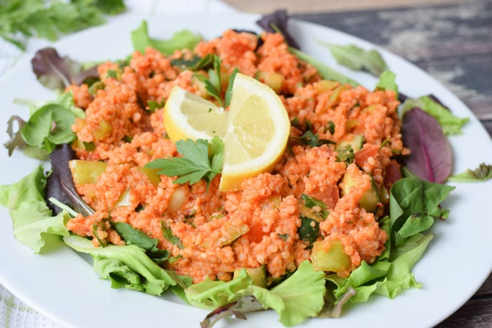

Kisir

Decription
Kisir is a simple, flavor-packed Turkish bulgur salad. It has some similarities to tabbouleh but with it's own distinct and delicious tart-savory flavors. Great as a meze dish or a side.
Ingredients
- bulgur 85g
- water 120ml, boiling hot
- 1 tablespoon tomato paste
- 1 tablespoon virgin olive oil
- 1 tablespoon pomegranate molasses
- 1 tablespoon lemon juice
- 1 tomato
- ½ Persian cucumber or ¼ English cucumber
- 2 tablespoon chopped parsley
- 1 spring onion or 2, to taste (scallions) - optional
Steps
- Put the bulgur into a heatproof bowl and cover with boiling water to give a layer of water over the bulgar of around ½in/1cm. Set aside to absorb the water around 10 minutes while you prepare everything else.
- Meanwhile, mix together the dressing ingredients - the tomato paste, olive oil, pomegranate molasses and lemon juice.
- Dice the cucumber and tomato relatively small and finely chop the parsley. Slice the spring onion in thin slices, if using.
- Once the bulgur has absorbed the water, drain off any excess water then mix through the dressing. Add and stir through the tomato, cucumber and parsley (plus onion, if using).
- Serve there and then or chill until needed (best served room temperature).
Notes
Kisir is generally made with relatively small/fine bulgur, but use as you have. If your bulgar is particularly coarse, it may not expand properly just covering with boiling water. Instead, you may need to place it in a small pan with water and boil for around 5 minutes to let it expand, then drain and cool before making the salad. See packet instructions as a guide